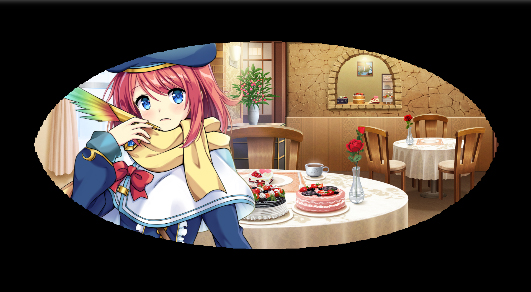
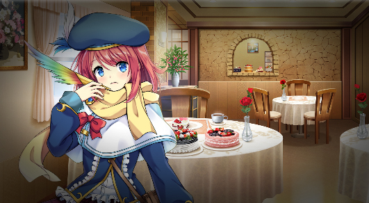

HTML
场景编辑器场景编辑器
场景属性
场景属性U
pon 创建新场景时，您会注意到一个名为“场景属性”的小弹出窗口将出现。名称
场景的名称UID
场景的 UID。如果创建的是新场景，则为空，因为它会在创建时自动计算，无法编辑。它显示后端场景文档的唯一标识符，可以通过单击“打开”按钮在文件浏览器中打开。 打开
在文件浏览器中打开后端场景文档。禁用实时预览
仅禁用该场景的实时预览显示。HTML
屏幕屏幕
The 屏幕 命令允许您操纵和为游戏屏幕添加效果。
屏幕效果将效果应用于屏幕。
类型- 将应用于屏幕的效果。
摆动使场景以不规则和摇晃的运动移动。
强度设置摆动的强度。值越高，摆动效果越明显。
速度设置摆动的速度。值越高，速度越快。
方向- 设置摆动方向。
垂直将摆动方向设置为垂直方向。
水平将摆动方向设置为水平方向
两者将摆动方向设置为两个方向。
持续时间设置效果将持续的时间（以毫秒为单位）。模糊使场景显得模糊不清。
设置模糊的强度，值越高，屏幕将变得越模糊。
持续时间设置屏幕达到指定模糊强度所需的时间（以毫秒为单位）。使用此选项可平滑地淡入或淡出场景。
像素化
使场景显示为像素化/块状。
宽度
设置单个块/像素的宽度。高度
设置单个块/像素的高度。持续时间
设置场景达到指定块/像素大小所需的时间（以毫秒为单位）。使用此选项可平滑像素化场景。 Z-Order
设置效果将发生在哪一层 Z 级。默认情况下，效果仅影响非 UI 游戏对象，如背景、角色等，但不影响消息框或消息文本。您可以更改 Z-Order 以仅影响背景，或影响包括消息框在内的整个屏幕。
缓动
将缓动应用于效果动画。有关更多信息，请参见缓动效果
页面。
屏幕色调
更改整个屏幕颜色。这不会影响日志、消息窗口和图片。色调控制
- 控制屏幕颜色。调整红色、绿色和蓝色的色调（-255 至 255）。使用灰色设置灰度滤镜的强度（0 至 255）。值越高，颜色的整体强度越大。
对话框底部的“正常”、“黑暗”、“棕褐色”、“早晨”和“夜晚”按钮用于快速应用其名称所代表的标准色调值。 “正常”按钮恢复到原始色调。您可以在对话框顶部预览区域中查看色调变化。
- 确定屏幕效果持续多长时间。
继续将使场景立即继续。
等待
将使场景等待直到退出动画完成。屏幕闪烁
用指定颜色瞬间填充整个屏幕，然后逐渐恢复到原始颜色。这可以用来表示闪电等。
颜色控制- 控制闪烁颜色。使用红色、绿色和蓝色滑块（0 至 255）指定要闪烁的颜色。
您可以在对话框顶部预览区域中查看指定的颜色。使用强度来指定颜色的不透明度（0 至 255）。将强度设置为“0”会使颜色完全透明，使其在屏幕上不可见。
持续时间 - 确定闪烁效果持续多长时间。
继续将使场景立即继续。等待将使场景等待直到退出动画完成。
抖动屏幕，可用于描绘冲击或碰撞的场景。
X 范围- 设置屏幕的水平移动。它会在您设置的值的负值和正值之间随机化。
例如，如果设置为 5，屏幕将在 -5 到 5 之间抖动。Y 范围
- 设置屏幕的垂直移动。它会在您设置的值的负值和正值之间随机化。例如，如果设置为 5，屏幕将在 -5 到 5 之间抖动。
持续时间- 确定抖动持续多长时间。
继续将使场景立即继续。
将使场景等待直到退出动画完成。
缓动将缓动应用于抖动移动。有关更多信息，请参见
缓动效果页面。
屏幕平移移动屏幕，可用于游戏内摄像机移动。
X- 在 x 轴上移动的像素数。
Y- 在 y 轴上移动的像素数。
- 移动的持续时间。
继续将使场景立即继续。等待将使场景等待直到移动完成。屏幕缩放
缩放屏幕，可用于游戏内摄像机效果。X 缩放
- x 轴上的缩放。Y 缩放
- y 轴上的缩放。持续时间
- 确定缩放需要多长时间。继续
等待
屏幕旋转
旋转屏幕，可用于游戏内摄像机效果。方向
- 旋转方向，可以是顺时针


或逆时针。